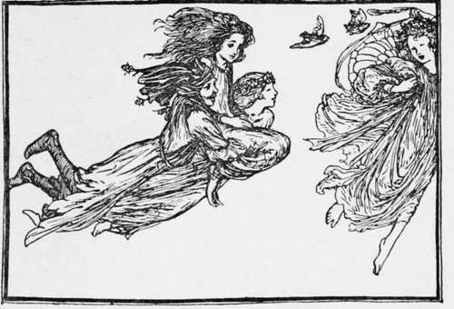

The Elfin Grove
Description
This section is from the book "Household Tales by Brothers Grimm", by Brothers Grimm. Also available from Amazon: Household Tales by Brothers Grimm.
The Elfin Grove
As an honest woodman was sitting one evening, after his work was done, talking with his wife, he said, " 1 hope the children will not run into that grove by the side of the river; it looks more gloomy than ever; the old oak tree is sadly blasted and torn; and some odd folks, I am sure, are lurking about there, but who they are nobody knows." The woodman, however, could not say that they brought ill luck, whatever they were; for every one said that the village had thriven more than ever of late, that the fields looked gayer and greener, that even the sky was of a deeper blue, and that the moon and stars shed a brighter light. So, not knowing what to think, the good people very wisely let the new comers alone; and, in truth, seldom said or thought anything at all about them.
That very evening, the woodman's daughter Roseken, and her playfellow Martin, ran out to have a game of hide-and-seek in the valley. " Where can he be hidden ?" said she; " he must have gone towards the grove; perhaps he is behind the old oak tree": and down she ran to look. Just then she spied a little dog that jumped and frisked round her, and wagged his tail, and led her on towards the grove. Then he ran into it, and she soon jumped up the bank by the side of the old oak to look for him; but was overjoyed to see a beautiful meadow, where flowers and shrubs of every kind grew upon turf of the softest green ; gay butterflies flew about; the birds sang sweetly; and what was strangest, the prettiest little children sported about like fairies on all sides; some twining the flowers, and others dancing in rings upon the smooth turf beneath the trees. In the midst of the grove, instead of the hovels of which Roseken had heard, she could see a palace, that dazzled her eyes with its brightness.
For a while she gazed on the fairy scene, till at last one of the little dancers ran up to her, and said, " And so, pretty Roseken, you are come at last to see us ? We have often seen you play about, and wished to have you with us." Then she plucked some of the fruit that grew near, and Roseken at the first taste forgot her home, and wished only to see and know more of her fairy friends. So she jumped down from the bank and joined the merry dance.
Then they led her about with them, and showed her all their sports. One while they danced by moonlight on the primrose banks, at another time they skipped from bough to bough, among the trees that hung over the cooling streams, for they moved as lightly and easily through the air as on the ground: and Roseken went with them everywhere, for they bore her in their arms wherever they wished to go. Sometimes they would throw seeds on the turf, and little trees would spring up; and then they would set their feet upon the branches, and rise as the trees grew under them, till they danced upon the boughs in the air, wherever the breezes carried them, singing merry songs.
At other times they would go and visit the palace of their queen : and there the richest food was spread before them, and the softest music was heard; and all around grew flowers, which were always changing their hues, Jiom scarlet to purple, and yellow, and emerald. Sometimes they went to look at the heaps of treasure which were piled up in the royal stores; for little dwarfs were always employed in searching the earth for gold. Small as this fairy land looked from without, it seemed within to have no end; a mist hung around it to shield it from the eyes of men; and some of the little elves sat perched upon the outermost trees, to keep watch lest the step of man should break in and spoil the charm.
"And who are you?" said Roseken one day. "We are what are called elves in your world," said one whose name was Gossamer, and who had become her dearest friend: "we are told you talk a great deal about us. Some of our tribes like to work you mischief, but we who live here seek only to be happy; we meddle little with mankind, and when we do come among them it is to do them good." "And where is your queen?" said Roseken. " Hush ! hush! you cannot see or know her : you must leave us before she comes back, which will be now very soon, for mortal step cannot come where she is. But you will know that she is here, when you see the meadows gayer, the rivers more sparkling, and the sun brighter."
Soon afterwards Gossamer told Roseken the time was come to bid her farewell; and she gave her a ring in token of their friendship, and led her to the edge of the grove. "Think of me," said she; "but beware how you tell what you have seen, or try to visit any of us again: for if you do, we shall quit this grove and come back no more." Turning back, Roseken saw nothing but the old oak and the gloomy grove she had known before. " How frightened my father and mother will be! " thought she, as she looked at the sun, which had risen some time. "They will wonder where I have been all night, and yet I must not tell them what I have seen."
Then she hastened homewards, wondering, however, as she went, to see that the leaves, which were yesterday so fresh and green, were now falling dry and yellow around her. The cottage, too, seemed changed; and when she went in, there sat her father, looking some years older than when she saw him last, and her mother, whom she hardly knew, was by his side. Close by was a young man. "Father," said Roseken, "who is this?" "Who are you that call me father?" said he; "are you —no, you cannot be—our long-lost Roseken?" But they soon saw that it was their Roseken; and the young man, who was her old friend and playfellow Martin, said, "No wonder you had forgotten me in seven years; do not you remember how we parted, seven years ago, while playing in the field? We thought you were quite lost; but I am glad to see that some one has taken care of you, and brought you home at last." Roseken said nothing, for she could not tell all; but she wondered at the strange tale, and felt gloomy at the change from fairy land to her father's cottage.
Little by little she came to herself, thought of her story as a mere dream, and soon became Martin's bride. Everything seemed to thrive around them; and Roseken thought of her friends, and so called her first little girl Elfie. The little thing was loved by every one. It was pretty and very good-tempered. Roseken thought that it was very like a little elf; and all, without knowing why, called it the fairy-child.
One day, while Roseken was dressing her little Elfie, she found a piece of gold hanging round her neck by a silken thread; and knew it to be of the same sort as she had seen in the hands of the fairy dwarfs. Elfie seemed sorry at its being seen, and said that she had found it in the garden. But Roseken watched her, and soon found that she went every afternoon to sit by herself in a shady place behind the house. So one day she hid herself to see what the child did there, and to her great wonder Gossamer was sitting by her side. "Dear Elfie," she was saying, " your mother and I used to sit thus when she was young and lived among us. Oh, if you could but come and do so too! But since our queen came to us it cannot be; yet I will come and see you, and talk to you whilst you are a child; when you grow up we must part for ever." Then she plucked one of the roses that grew around them, and breathed gently upon it, and said, "Take this for my sake! it will now keep fresh for a whole year."
Then Roseken loved her little Elfie more than ever; and when she found that she spent some hours of almost every day with the elf, she used to hide herself and watch them without being seen; till one day, when Gossamer was bearing her little friend through the air from tree to tree, her mother was so frightened lest her child should fall, that she could not help screaming out; and Gossamer set her gently on the ground, and seemed angry, and flew away. But still she used sometimes to come and play with her little friend; and would soon, perhaps, have done so the same as before, had not Roseken one day told her husband the whole story: for she could not bear to hear him always wondering and laughing at their little child's odd ways, and saying he was sure there was something in the grove that brought them no good. So, to show him that all she said was true, she took him to see Elfie and the fairy; but no sooner did Gossamer know that he was there (which she did in an instant), than she changed herself into a raven, and flew off into the grove.
Roseken burst into tears, and so did Elfie, for she knew she should see her dear friend no more ; but Martin was restless and bent upon following up his search after the fairies, so when night came he stole away towards the grove. When he came to it nothing was to be seen but the old oak, and the gloomy grove, and the hovels; and the thunder rolled, and the wind whistled. It seemed that all about him was angry, so he turned homewards, frightened at what he had done.
In the morning all the neighbours flocked around, asking one another what the noise and bustle of the last night could mean; and when they looked about them, their trees seemed blighted and the meadows parched, the streams were dried up, and everything seemed troubled and sorrowful.
But yet they all thought that, somehow or other, the grove had not near so forbidding a look as it used to have. Strange stories were told: how one had heard flutterings in the air, another had seen the grove as it were alive with little beings, that flew away from it. Each neighbour told his tale, and all wondered what could have happened. But Roseken and her husband knew what was the matter, and bewailed their folly; for they foresaw that their kind neighbours, to whom they owed all their luck, were gone for ever.
Among the bystanders none told a wilder story than the old ferryman, who plied across the river at the foot of the grove. He told how at midnight his boat was carried away, and how hundreds of little beings seemed to load it with treasures: how a strange piece of gold was left for him in the boat as his fare; how the air seemed full of fairy forms fluttering around; and how at last a great train passed over, that seemed to be guarding their leader to the meadows on the other side ; and how he heard soft music floating around; and how sweet voices sang as they hovered overhead,—
Fairy Queen! Fairy Queen! Mortal steps are on the green; Come away! Haste away ! Fairies, guard your Queen ! Hither, hither, Fairy Queen ! Lest thy silvery wing be seen ; O'er the sky. Fly, fly, fly! Fairies, guard your lady Queen ! O'er the sky, Fly, fly, fly! Fairies, guard your Queen !
Fairy Queen!
Fairy Queen ! Mortal steps no more are seen;
Now we may
Down and play O'er the daisied green. Lightly, lightly, Fairy Queen ! Trip it gently o'er the green!
Fairies gay,
Trip away, Round about your lady Queen !
Fairies gay,
Trip away, Round about your Queen !
Poor Elfie mourned their loss the most; and would spend whole hours in looking upon the rose that her playfellow had given her, and singing over it the pretty airs she had taught her: till at length, when the year's charm had passed away, and it began to fade, she planted the stalk in her garden, and there it grew and grew, till she could sit under the shade of it, and think of her friend Gossamer.
Continue to:
- prev: Fritz And His Friends
- Table of Contents
- next: Bear Skin
Tags
fairy tales, children's stories, brothers grimm, household tales